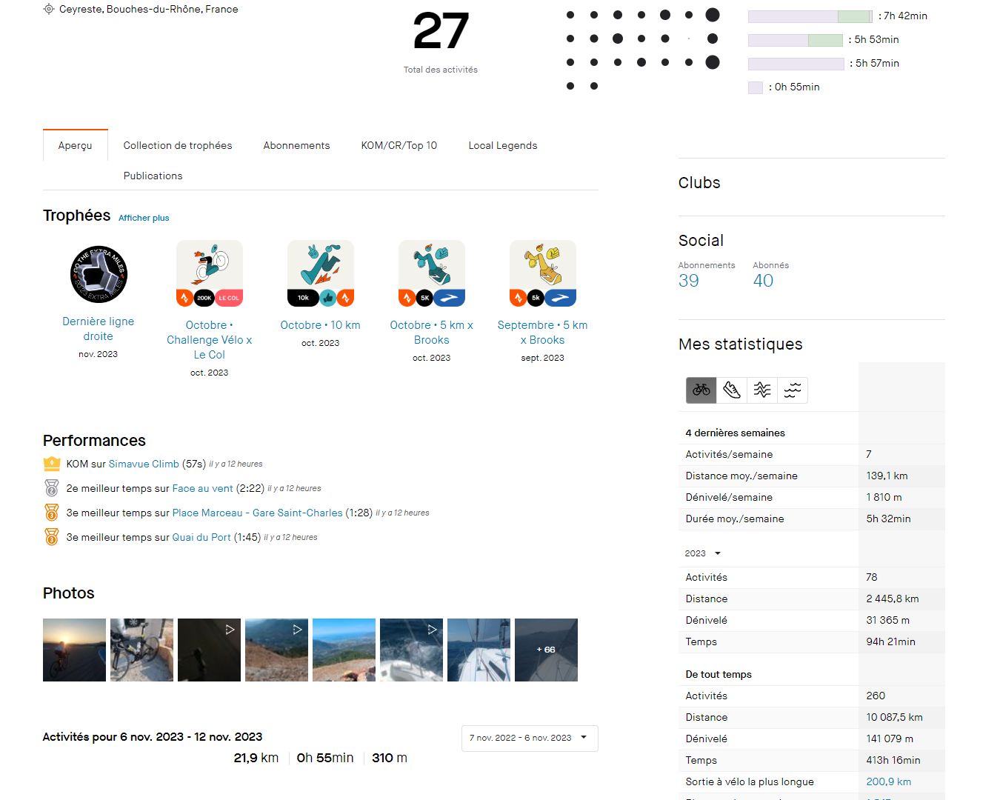

-
Suivi et Enregistrement des Activités :
Strava vous permet de suivre et d'enregistrer vos activités physiques, que ce soit la course à pied, le vélo, la natation, la randonnée ou d'autres sports. Vous pouvez utiliser votre smartphone ou une montre connectée pour enregistrer vos performances.
-
Données Détaillées :
L'application fournit des données détaillées sur vos activités, y compris la distance parcourue, la vitesse, l'élévation, les calories brûlées et bien plus encore. Vous pouvez suivre votre progression au fil du temps.
-
Objectifs et Défis :
Strava vous permet de définir des objectifs personnels pour vous motiver. Vous pouvez également participer à des défis communautaires pour relever des challenges.
-
Connectivité Sociale :
Vous pouvez suivre d'autres athlètes, commenter leurs activités, les encourager et partager vos propres réalisations. Strava crée une communauté de sportifs partageant les mêmes intérêts.
-
Segments et Classements :
Strava propose des segments de parcours où vous pouvez comparer vos performances avec celles d'autres athlètes. Vous pouvez même essayer de décrocher le titre de "Roi ou Reine du Segment" pour les segments populaires.
-
Plan d'Entraînement :
Strava propose des plans d'entraînement personnalisés pour vous aider à atteindre vos objectifs.
Strava
Strava est bien plus qu'une simple application de suivi des activités sportives. C'est une plateforme sociale pour les athlètes, les coureurs, les cyclistes et les adeptes de nombreuses autres activités sportives. Voici une description complète de ses fonctionnalités :
Un exemple de l'appli
Strava est l'application incontournable pour les sportifs qui souhaitent suivre leurs performances, se motiver, se connecter avec d'autres athlètes et s'améliorer continuellement.